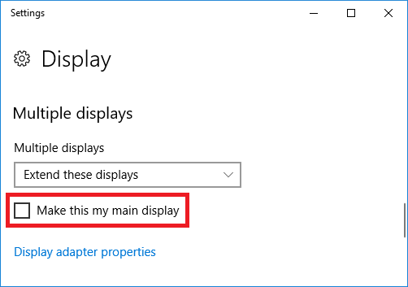
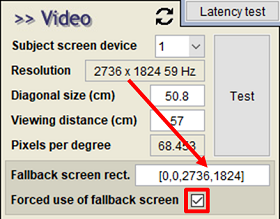
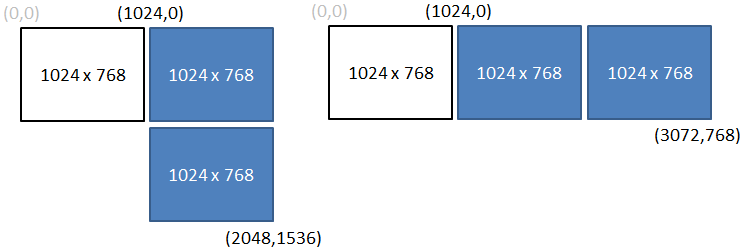
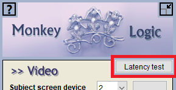
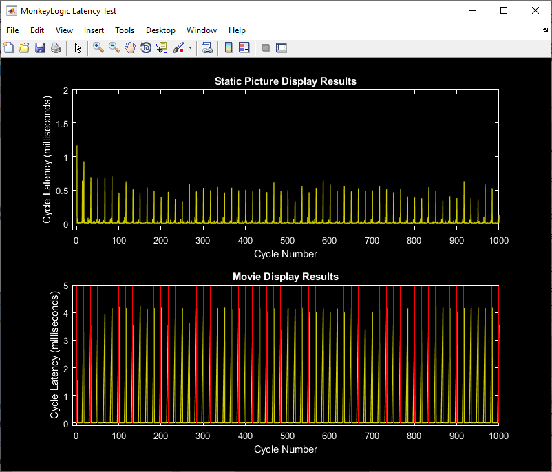

The National Institute of Mental Health (NIMH) is part of the National Institutes of Health (NIH), a component of the U.S. Department of Health and Human Services.
A typical NIMH ML setup requires two monitors: one for the subject screen and the other for the control screen. To use two monitors, go to "Display settings" of Windows, select the secondary monitor and set the "Multiple displays" option to "Extend these displays", as shown below.

It has been reported that some monitors (especially the ones designed for vision science, such as ViewPixx, Display++, etc.) should be the main display of the system, to pass the latency test and use refresh rates recommended by manufacturers. To change the main display, check on the "Make this my main display" option in the "Display settings".
Restart NIMH ML if any display setting is changed.
You can run NIMH ML from either monitor, no matter which monitor is your main display. Just drag the NIMH ML window to the monitor that you want to be the control screen and change "Subject screen device" to the other monitor on the main menu.
Check on "Forced use of fallback screen" and type the screen size in the "Fallback screen rect." like [0, 0, width, height].

The trick to use multiple (>2) monitors in NIMH ML is to create one big screen that covers all the monitors. The method is the same as when using a single monitor. Select the "Forced use of fallback screen" option and change the fallback screen size.
To make this work, it is necessary to arrange the monitors in a retangular shape, like the examples below. Then get the Windows coordinates of the left-top and right-bottom corners of the retangle and put them in the "Fallback screen rect." like [left top right bottom].

To check whether the monitors are configured properly, run the latency test from the Video menu. The red lines in the Movie Display Results indicate the start times of new frames. See if they show up regularly as in the example below. The intervals between the lines should be the same as a frame length (e.g., 16.67 ms for a 60-Hz display).


If the latency test does not look like the above figure and skipped frames occur, try these things.
Note that skipped frames may occur just due to the limitations of your hardware, especially if the display resolutions are high. For example, only a few high-end graphic cards currently in the market can do 4K (3840 x 2160) 60-Hz graphics without skipped frames. If this is the case, just lower the display resolution in Windows display settings.
If none of them works, remove the following keys from the Windows registry, restart the computer and try them again.
If you were able to fix the problem, please post how you fixed it in the forum.
The National Institute of Mental Health (NIMH) is part of the National Institutes of Health (NIH), a component of the U.S. Department of Health and Human Services.